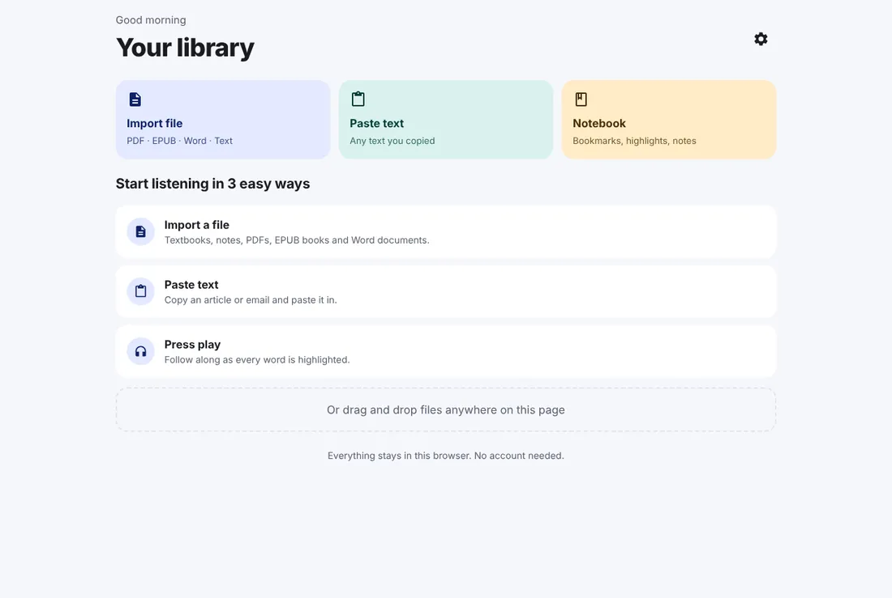
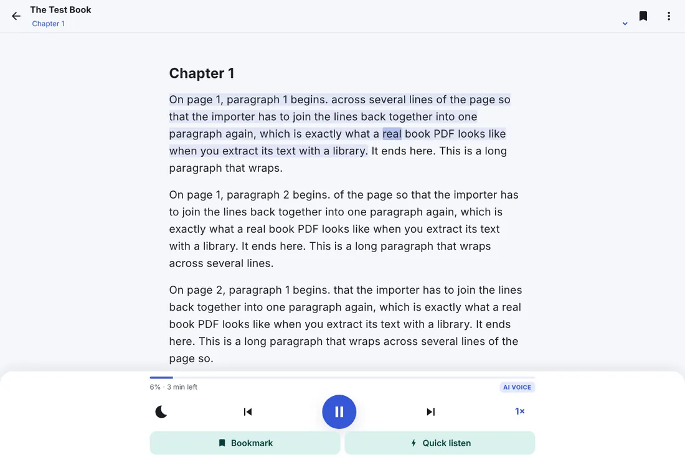
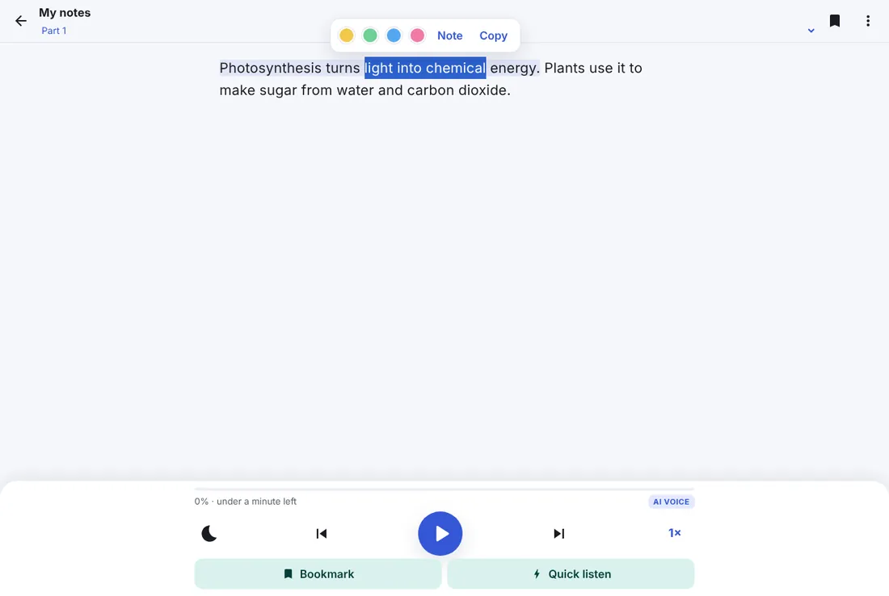
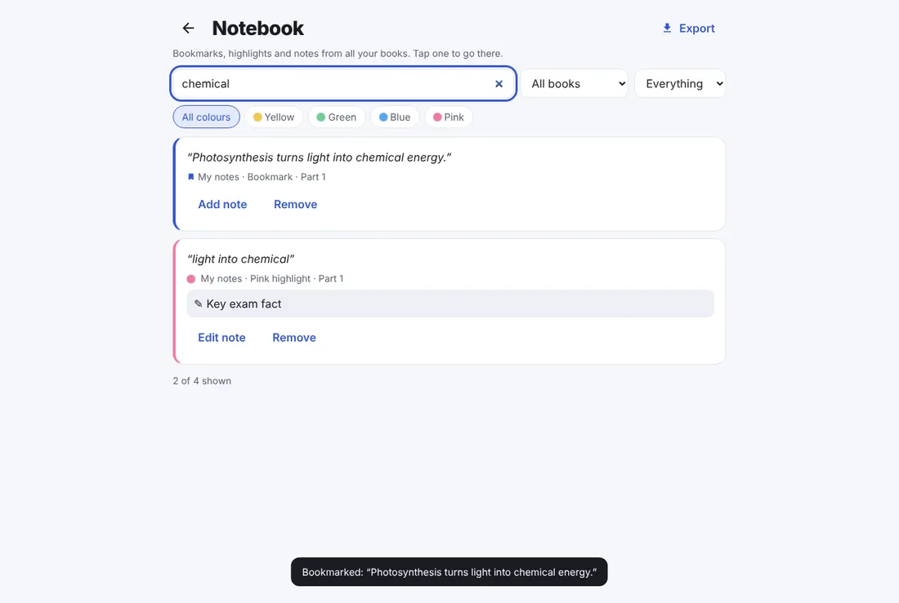
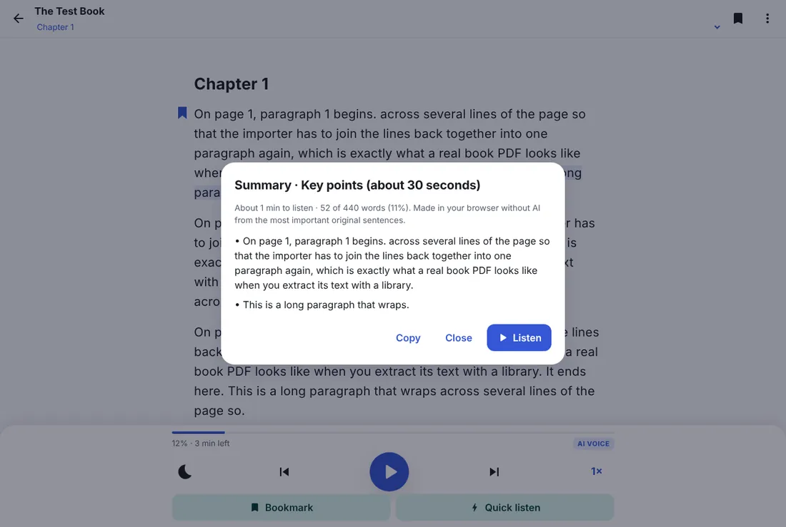
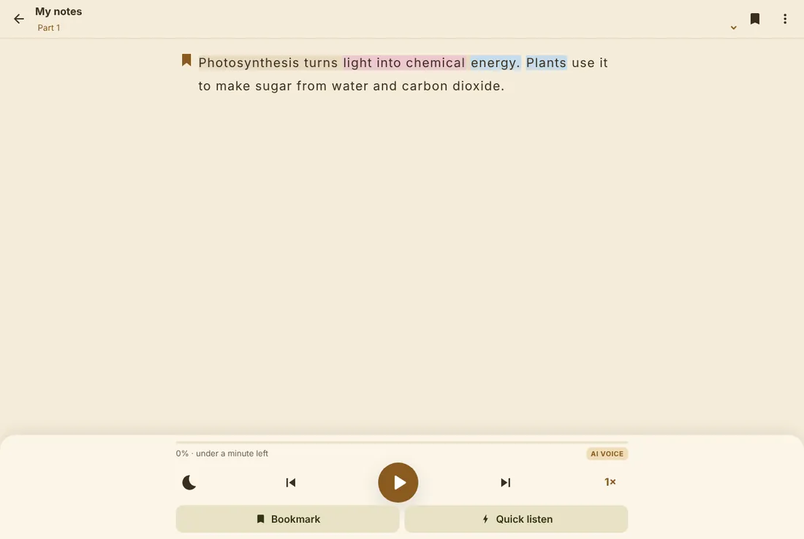

Lazy Reader web app · a quick, friendly guide
Tap Import file or Paste text on the library page. On a phone you can also share text or a link to Lazy Reader after installing it.
Lazy Reader opens PDF, EPUB, Word (DOCX), text, Markdown and HTML files. Before importing, it shows what Smart Clean will skip (page numbers, headers, footers, footnote marks, links), so you only hear the real text.

Tap the big ▶ button at the bottom, or press Space on a keyboard.
Choose a voice in Settings. Tap the speed button (1×) to change speed.
The sentence being read is shaded and the page follows along. Drag the progress bar to jump. Click any sentence, then Read from here, to start there.

Tap the ribbon button at the top (or press B) right after you hear something worth keeping.
It saves the sentence you just heard, because people usually press a second late. A ribbon appears in the margin; click it to play from there. Press again to remove it.
Select some words. A small bar appears: pick yellow, green, blue or pink, or Note to write a thought. Click a highlight later to change its colour, edit the note or remove it.

Tap Notebook on the library page, or ⋮ → Notebook inside a book.
All bookmarks, highlights and notes from every book are in one place. Search, or filter by book, type or colour. Click an item to open the book at that spot. Export copies everything as text.

Tap Quick listen and pick Key points, a 5-minute overview or 10-minute key information.
Summaries use the document's own most important sentences, made instantly on your device, and you can listen to them.

Open Settings to choose Light, Sepia or Dark, a reading font and the text size.

| Space | Play / pause |
| → / ← | Next / previous sentence |
| B | Bookmark the sentence you just heard |
| Esc | Close the selection bar |
Turn off silent mode and turn the volume up; tap ▶ again.
Pick another voice in Settings. Edge and Chrome usually have the most natural ones.
Books are stored in this browser only. Clearing site data, private browsing or another browser starts empty.
Chrome/Edge: Install app in the address bar. iPhone Safari: Share → Add to Home Screen.
Privacy: The web app uses your browser's voices. Voices marked “Online” (for example in Edge or Chrome) send the text being read to that company to make the sound; other voices work on your device. Your books, bookmarks, highlights and notes stay on your device. Full details: lazyreader.thestreamic.in/privacy.html